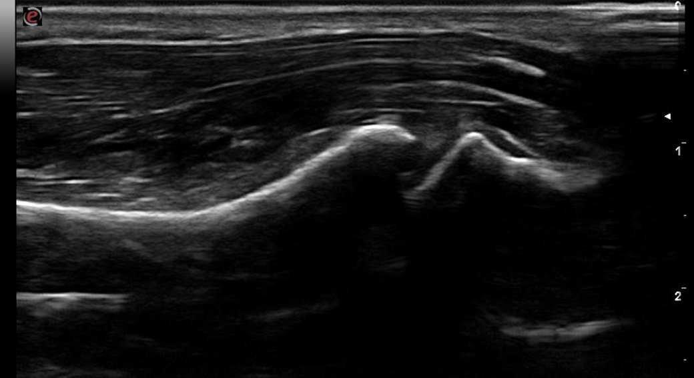

轉瓶蓋、夾菜，拇指根部就痛？不一定是媽媽手——認識拇指根部退化性關節炎
每天中午前兩個小時，是便當店最忙的時候。
「阿芬姐」是一位 40 多歲的便當店老闆娘，店裡生意好，中午總是排滿人。她一手拿飯匙挖飯、壓實，一手用夾子把菜一格一格放進便當盒，蓋上盒蓋、套上橡皮筋——同樣的動作，一個中午要重複上百次。
幾個月前，她發現右手拇指根部開始不舒服，而且一路慢慢加重。一開始只是收攤後痠痠的，後來連夾菜、扭毛巾都會痛到停下來。她之前被告知可能是「媽媽手」，貼藥布、休息幾天會好一點，一回到店裡又打回原形。
來到診間時，她指著的位置不在手腕，而是更靠近手掌的拇指根部——這個細節，正是她和媽媽手最大的不同。
當時的診斷不一定有錯，症狀本來就會隨時間變化；我們看到的是「現在」的狀況，並據此重新評估。這次超音波下看到的，是第一掌腕關節的退化與發炎。
拇指根部退化性關節炎是什麼？
拇指能做出「捏」「握」「轉」這些精細動作，靠的是拇指根部的第一掌腕關節（first carpometacarpal joint, CMC1），由手腕的大多角骨（trapezium）和拇指的第一掌骨組成。

這個關節長得像一副馬鞍：第一掌骨像騎士，跨坐在大多角骨這個馬鞍上。騎士可以前後、左右、轉圈移動，所以拇指特別靈活；但馬鞍本身不深，騎士要坐穩，得靠周圍的韌帶和肌肉當「韁繩」。
拇指根部退化性關節炎（thumb CMC osteoarthritis），就是這個關節的軟骨逐漸磨損、關節周圍長出骨刺、滑膜發炎增厚，造成疼痛、無力，甚至關節變形。它是手部最常見的退化性關節炎之一，好發於：
- 長期需要用力捏、握、轉的工作：餐飲業、美髮、裁縫、包裝作業
- 曾經有拇指扭傷、關節韌帶較鬆的人
- 中年以上，特別是停經後女性
為什麼會發生？
把馬鞍的比喻再延伸一點：
韁繩（韌帶）長年被拉扯，慢慢變鬆；騎士（第一掌骨）在馬鞍上開始坐不穩、往外滑。每一次用力捏東西，關節面不再平均受力，而是集中在某一小塊區域摩擦——磨損就從這裡開始。
阿芬姐的工作剛好踩中所有條件：
- 挖飯、壓飯：拇指根部要對抗整匙飯的重量與阻力
- 用夾子夾菜：反覆的「尖端捏」，是拇指根部受力最集中的姿勢
- 套橡皮筋、蓋盒蓋：拇指外展加上轉動，一天重複上百次
當關節開始不穩，周圍的肌肉——特別是大魚際肌群（thenar muscles）、內收拇肌（adductor pollicis）與第一背側骨間肌（first dorsal interosseous）——就會被迫加班「幫忙固定」，久了變得緊繃、出現激痛點，疼痛範圍也跟著擴大到整個虎口與掌心，甚至整隻前臂的緊繃感。
所以拇指根部的痛，往往不是單一來源，而是「關節本身的退化發炎」加上「代償肌肉的緊繃」疊加在一起。
跟媽媽手怎麼分？
這兩個問題位置很接近，症狀也相似，是臨床上常被混淆的一組。
| 拇指根部關節炎 | 媽媽手 | |
|---|---|---|
| 正式名稱 | 第一掌腕關節退化性關節炎 | 狄奎凡氏腱鞘炎（De Quervain's tenosynovitis） |
| 問題在哪 | 關節本身 | 拇指旁的兩條肌腱與腱鞘 |
| 痛點位置 | 拇指根部，較靠近手掌 | 手腕橈側突起處（橈骨莖突），較靠近手腕 |
| 最痛的動作 | 捏、轉、用力壓：轉瓶蓋、夾東西、扭毛巾 | 拇指握在拳頭內、手腕往小指側彎 |
| 常見檢查 | 研磨試驗（grind test） | 芬克斯坦試驗（Finkelstein test） |
怎麼評估？超音波看得到什麼
X 光可以看到骨頭的結構：關節間隙有沒有變窄、骨刺大小、關節有沒有半脫位，臨床上常用伊頓分期（Eaton-Littler classification）來描述嚴重程度。
超音波則補上 X 光看不到的部分：
- 滑膜增厚與關節積液：關節「現在」有沒有在發炎
- 都卜勒血流訊號（power Doppler）：發炎的活躍程度
- 骨刺與關節囊的狀態：關節周圍軟組織是否受到影響
- 同時檢查媽媽手的位置：第一伸肌腔室的肌腱有沒有增厚，一次釐清疼痛來源
回到阿芬姐：透過理學檢查與超音波評估，確認她的疼痛來源就在第一掌腕關節——找對問題，治療才有方向。
中醫有哪些工具可以處理？
從中醫的角度，拇指根部退化屬於「痹證」範疇。年紀漸長、肝腎漸虧，筋骨失去濡養，加上長期勞損，局部氣血運行不暢，就容易出現關節疼痛僵硬。
所以處理的思路不只是「哪裡痛就處理哪裡」，而是同時顧到三件事：局部的經筋與關節、整體的修復能力，以及每天反覆使用的方式。每一種工具都有它的意義，醫師的工作是依照理學檢查與超音波看到的狀況，找出最適合這個人、這個階段的組合。
1. 乾針：直接處理疼痛的位置
確認疼痛來源在第一掌腕關節後，可以在關節周圍給予局部的乾針刺激。若周邊的大魚際肌、內收拇肌、第一背側骨間肌因為代償而緊繃，也可以用乾針處理肌肉中的激痛點（trigger points），把「疊加上去的那一層痛」拿掉，讓患者有機會開始動、開始訓練。
2. 浮針：放鬆整片緊繃的筋膜
浮針只作用在皮下淺筋膜層，不深入肌肉。當疼痛已經擴散到整個虎口與掌心、摸起來是一整片緊繃時，可以考慮用浮針放鬆筋膜張力。
3. 小針刀：超音波導引下處理沾黏
慢性期、關節囊周圍組織緊繃沾黏的情況，可以在超音波導引下評估是否適合小針刀處理。拇指根部附近有橈動脈與橈神經淺支經過，超音波導引的價值就在這裡：看得見血管神經，下針才能避開它們。
4. 中藥：增進修復能力
針刺處理的是局部，中藥照顧的是整體的修復能力，這是中醫的特色之一。依體質與當下狀態不同，常見的思路如：
- 肝腎不足、筋骨痠軟、遇冷加重：可考慮以「獨活寄生湯」加減，補肝腎、強筋骨、祛風濕
- 關節局部腫脹、溫熱感明顯（相當於滑膜發炎較活躍的階段）：可考慮「桂枝芍藥知母湯」加減，兼顧通絡與清熱
5. 運動處方與用手習慣調整
回到馬鞍的比喻：韁繩鬆了，光是幫馬按摩沒有用，要讓騎士重新坐穩。針與藥之外，運動處方和用手方式的調整，是讓關節長期穩定的關鍵。
對阿芬姐來說，我們一起檢視了她的工作流程：
- 飯匙換成加粗握把：減少拇指需要的捏握力
- 壓飯改用掌根：不用拇指去頂
- 夾子換成彈簧回彈款：減少每一次張開所需的拇指出力
- 高峰時段戴副木：讓關節在最忙的兩個小時有支撐
治療前須知
- 乾針、浮針可能出現治療處痠痛、瘀青，少見有暈針、感染等風險。
- 小針刀屬於侵入性治療，可能伴隨疼痛、瘀血、腫脹、感染、神經血管損傷等風險。
- 中藥方劑需依個人體質與當下狀態調整，請勿自行購買或抓藥服用。
以上治療都需經醫師當面評估是否適合。
需要轉介的情況
若評估後是我無法處理的情況——例如關節已嚴重變形、保守治療效果有限——會需要建議轉介手外科評估手術的可能性，讓患者用最有效率的方式得到幫助。
回到阿芬姐
確認疼痛位置在第一掌腕關節之後，我們在關節局部做了乾針治療，以簡單的刺激為主，並同時搭配上述的工作方式調整。
重點整理
- 拇指根部痛、位置靠近手掌、捏和轉的動作最痛——要想到第一掌腕關節退化性關節炎，不一定只是媽媽手，兩者也可能同時存在。
- 這個關節像馬鞍，靈活但先天不夠穩，韌帶鬆了就容易磨損。
- 超音波可以看到滑膜發炎、積液、骨刺，也能同時檢查媽媽手的位置，幫助找出真正的疼痛來源。
- 中醫的工具包括乾針、浮針，必要時超音波導引下的小針刀，搭配中藥增進修復能力，以及運動處方與用手習慣調整。
- 不建議完全不動，也不建議只靠治療；調整用手方式＋運動處方，才是長期穩定的關鍵。
本文僅供醫療衛生教育參考，不能取代醫師的診斷與治療。每個人的病情、體質與治療反應不同，文中提及的治療方式並非適用於所有人，亦不保證療效；侵入性治療可能伴隨副作用與風險。如有身體不適，請尋求合格醫療專業人員當面評估。
參考文獻
- Eapen C, Aggarwal V, Thomas DT, Fondekar AP, Godia R. Effectiveness of proprioceptive training in patients with thumb carpometacarpal osteoarthritis: A systematic review. J Hand Ther. 2026;39(2):459-468.
- Klingenberg L, Haugen IK, Hammer HB, et al. Associations between synovitis and radiographic osteoarthritis progression in the first carpometacarpal and interphalangeal joints: results from the Nor-Hand study. RMD Open. 2026;12(3).
- Magni NE, McNair PJ, Rice DA. Mobilisation or immobilisation-based treatments for first carpometacarpal joint osteoarthritis: A systematic review and meta-analysis with subgroup analyses. Hand Ther. 2022;27(2):37-48.
- Veronese N, Smith L, Bolzetta F, et al. Efficacy of conservative treatments for hand osteoarthritis: An umbrella review of interventional studies. Wien Klin Wochenschr. 2021;133(5-6):234-240.
- Villafañe JH, Valdes K, Pedersini P, Berjano P. Thumb carpometacarpal osteoarthritis: A musculoskeletal physiotherapy perspective. J Bodyw Mov Ther. 2019;23(4):908-912.